1. เข้าสู่ระบบ
เปิดหน้า Admin (บุ๊กมาร์กไว้ — หน้าเกมของผู้ร่วมงานไม่มีลิงก์มาหน้านี้) แล้วใส่อีเมลและรหัสผ่านของทีมงาน
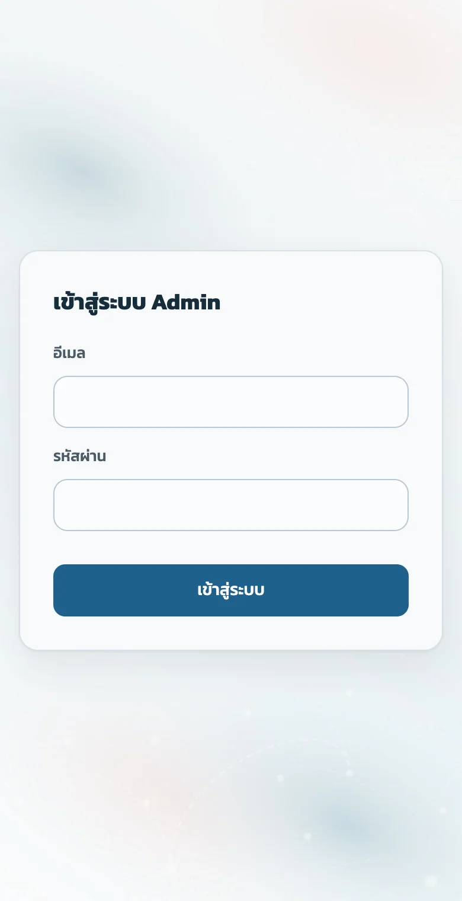
2. สร้าง / เลือก Event
ทุกอย่างในหน้า Admin (ของรางวัล, ฟอร์ม, รายชื่อ) เป็นของ Event ที่เลือกอยู่ในช่อง Event ด้านบนเสมอ
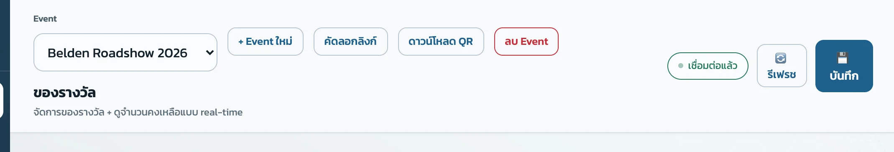
สร้าง Event ใหม่
- กด + Event ใหม่
- ใส่ ชื่อ Event เช่น Belden Roadshow 2026
- ใส่ Slug — ส่วนท้ายของลิงก์ ใช้ภาษาอังกฤษตัวเล็ก ตัวเลข และขีด - เช่น belden-roadshow-2026 (ระบบเสนอให้จากชื่อ แก้ได้)
- ระบบสลับไปที่ Event ใหม่ให้ทันที — เช็คชื่อในช่อง Event ก่อนทำอย่างอื่น
บนมือถือ
ปุ่มของ Event ซ่อนอยู่หลังปุ่ม ▾ ตัวเลือก Event — กดเพื่อเปิด และจะหุบเองหลังกดปุ่มใดปุ่มหนึ่ง
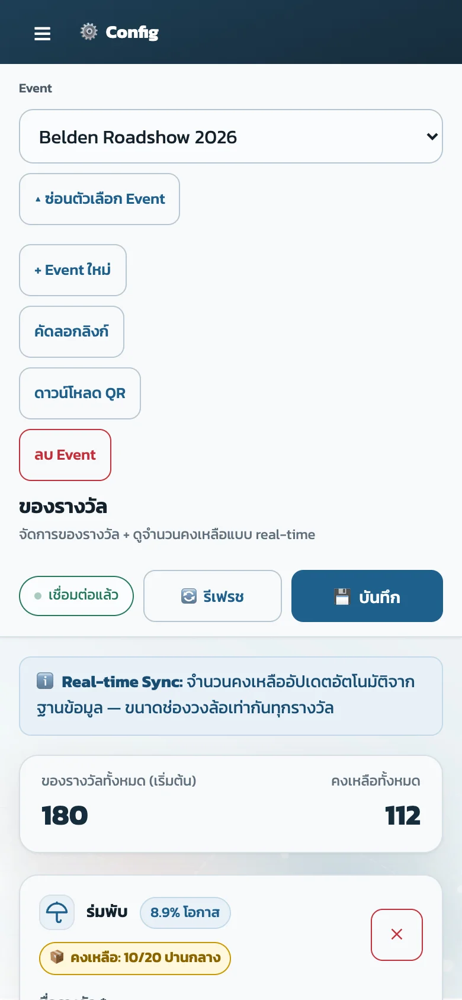
3. คัดลอกลิงก์ และ QR
- คัดลอกลิงก์ — ได้ลิงก์หน้าเกมของ Event ที่เลือกอยู่ (ลงท้ายด้วย ?event=slug) เอาไปแปะ LINE / โพสต์ได้เลย
- ดาวน์โหลด QR — ได้ไฟล์ PNG ความละเอียดสูง ตั้งชื่อไฟล์ตามชื่อ Event พร้อมพิมพ์ ระบบจะโชว์ลิงก์ปลายทางให้ตรวจก่อนดาวน์โหลด
4. ตั้งของรางวัล
เมนู ของรางวัล → การ์ดละหนึ่งรางวัล
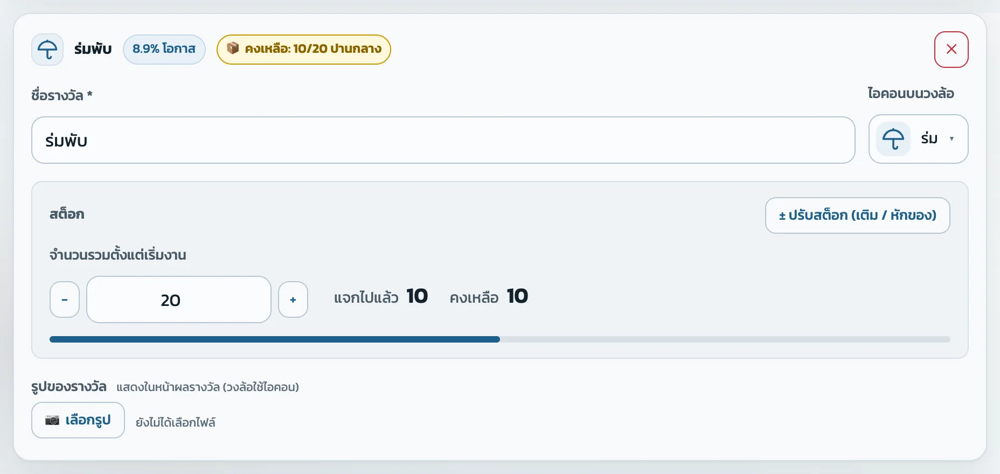
- ชื่อรางวัล — ข้อความบนวงล้อ ยิ่งสั้นยิ่งอ่านง่าย
- จำนวนรวมตั้งแต่เริ่มงาน — ของทั้งหมดที่ใส่เข้าเกมตั้งแต่วันแรก (ไม่ใช่ของที่เหลือ) ของที่เหลือ = จำนวนรวม − ที่แจกไปแล้ว
- โอกาส — คิดจากของที่เหลือ รางวัลที่เหลือเยอะออกบ่อยกว่า ของหมดแล้วจะไม่ออกอีก
- รูปของรางวัล (ไม่บังคับ) — แสดงในหน้าผลรางวัล ส่วนบนวงล้อใช้ไอคอนเสมอ
- + เพิ่มของรางวัล ได้สูงสุด 16 รายการ แนะนำ 6–12 รายการ (มากกว่านั้นวงล้ออ่านยาก)
5. เลือกไอคอนบนวงล้อ
กดปุ่มใต้หัวข้อ ไอคอนบนวงล้อ จะเปิดตารางไอคอนพร้อมชื่อ เลือกอันที่ใกล้ของจริงที่สุด แล้วตารางจะปิดเอง (คลิกข้างนอกหรือกด Esc เพื่อปิดโดยไม่เลือก)
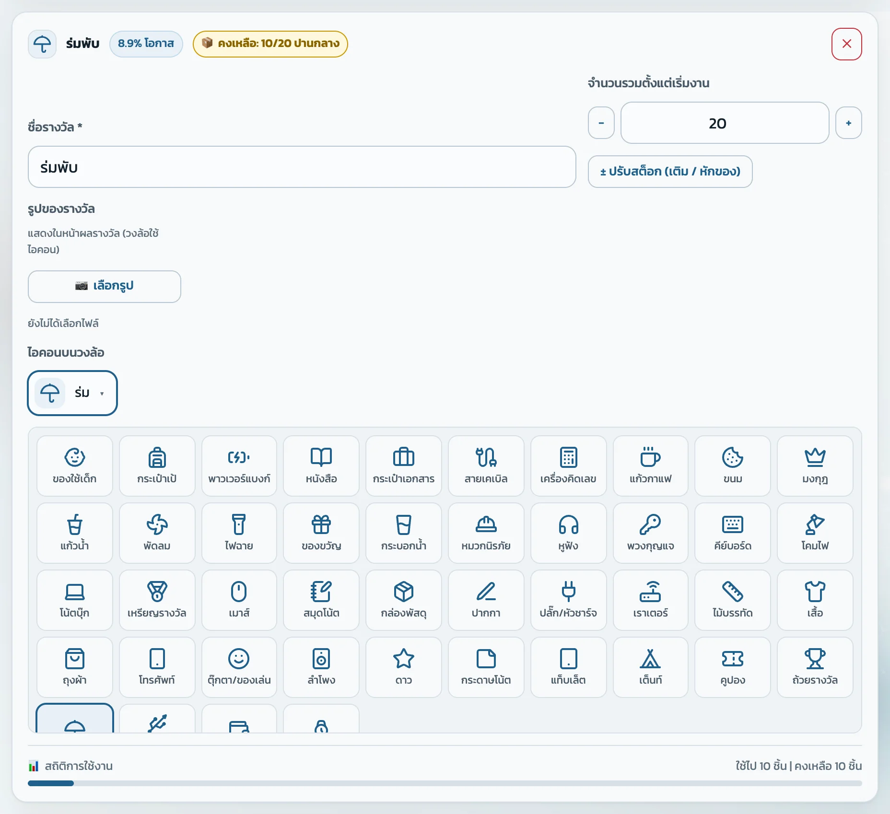
ไม่เจอไอคอนที่ต้องการ → ใช้ ของขวัญ ไปก่อน แล้วแจ้งผู้ดูแลระบบให้เพิ่ม
6. งานหลายวัน: เติมของสำหรับวันถัดไป
ใส่ของเฉพาะวันแรกตอนตั้งงาน แล้วเติมของของวันถัดไปทุกเช้า ด้วยปุ่ม ± ปรับสต็อก — ใส่แค่ “จำนวนที่จะเติม” ระบบคำนวณจำนวนรวมให้เอง
เช้าวันที่ 2 จะเพิ่มอีก 20 → เลือก เติมของ ใส่ 20 → ระบบโชว์ “คงเหลือ 10 → 30 ชิ้น (จำนวนรวม 20 → 40)”
- กด ± ปรับสต็อก (เติม / หักของ) ในการ์ดของรางวัล
- เลือก เติมของ แล้วใส่จำนวนชิ้นที่จะเติม
- ตรวจตัวเลข “คงเหลือ … → …” แล้วกด ยืนยันและบันทึก — บันทึกเข้าเกมทันที
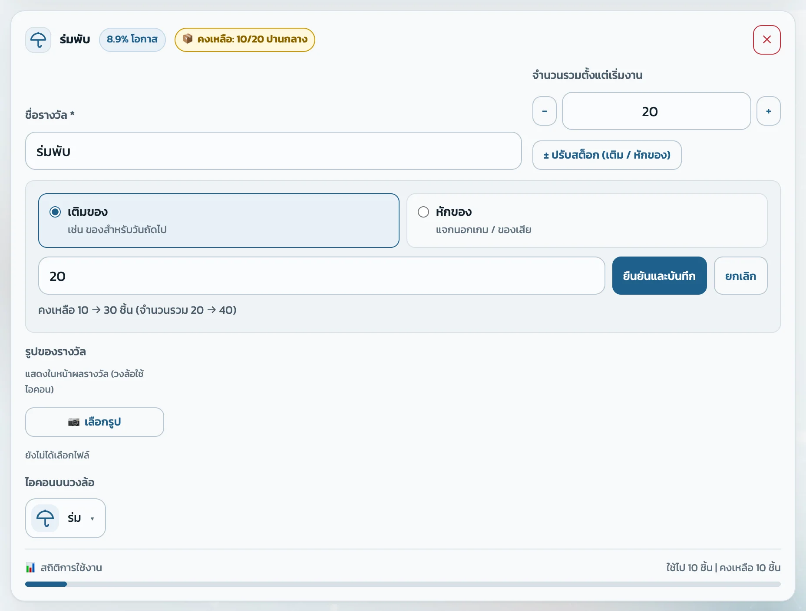
7. แจกนอกเกม / ของเสีย: หักของ
ถ้าหยิบของจากกองของเกมไปแจกนอกเกม (หรือของชำรุด) ให้หักออก เกมจะได้ไม่สุ่มของที่ไม่มีจริง
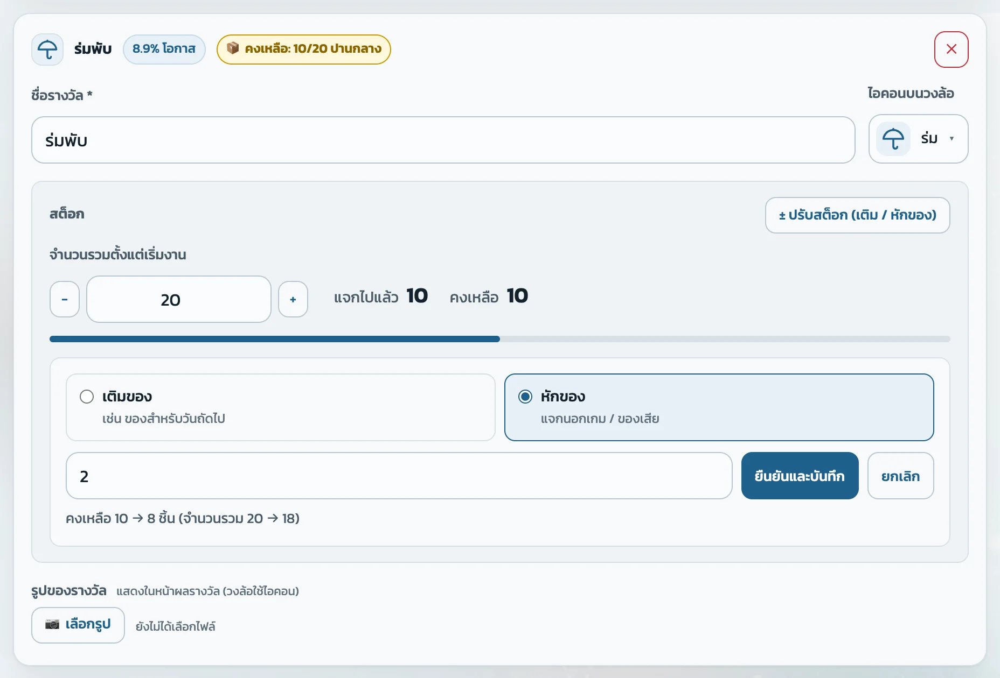
หักเกินของที่เหลือไม่ได้ — ระบบจะขึ้นตัวแดง “หักได้ไม่เกินของที่เหลือ” และปุ่มยืนยันกดไม่ได้
8. ตั้งค่าทั่วไป และหน้าลงทะเบียน
ตั้งค่าทั่วไป
- ชื่องาน Event — แสดงหัวหน้าเกม
- Logo URL
- ปุ่มติดตาม — ข้อความบนปุ่ม และลิงก์ Facebook / LINE ในหน้าผลรางวัล
- การหมุน — จำนวนรอบ และระยะเวลา (ปกติไม่ต้องแก้)
- ข้อความตอนของหมด
หน้าลงทะเบียน
- เปิด/ปิด และบังคับกรอก แต่ละช่อง (ชื่อ, อีเมล, เบอร์โทร ฯลฯ)
- รายชื่อแบรนด์ให้ติ๊กเลือก
- ข้อความขอความยินยอม PDPA
9. ผู้ร่วมงานจะเห็นอะไร
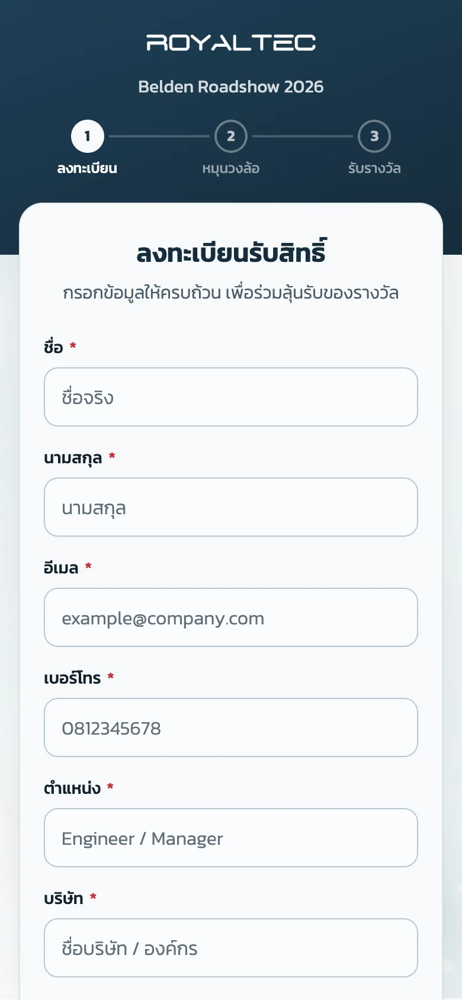
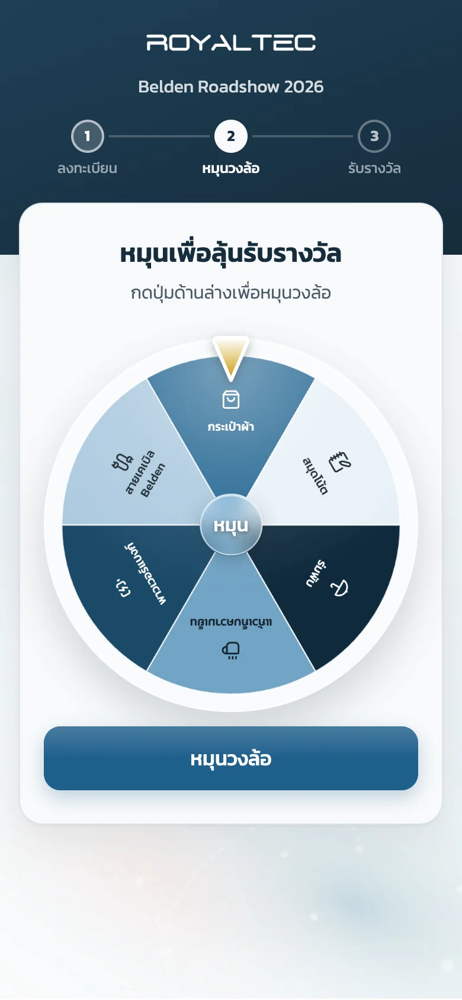
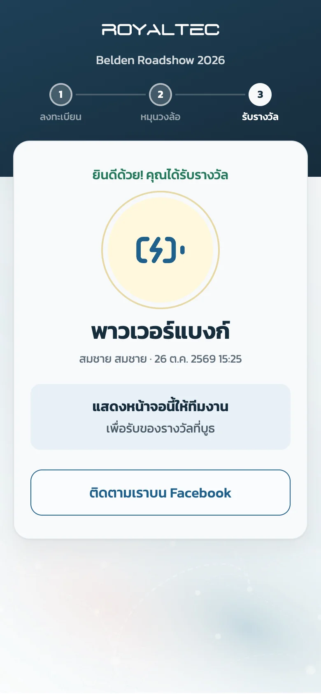
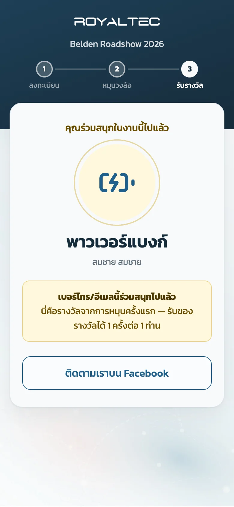
ผลรางวัลสุ่มจากเซิร์ฟเวอร์ตามของที่เหลือจริง วงล้อแค่หมุนไปหยุดที่รางวัลนั้น — ผู้ร่วมงานเลือกผลเองไม่ได้
หนึ่งคนเล่นได้ 1 ครั้งต่อ Event นับจาก เบอร์โทรหรืออีเมล ที่ซ้ำ ถ้าใช้ซ้ำจะเห็นกล่องสีทอง “เบอร์โทร/อีเมลนี้ร่วมสนุกไปแล้ว” (ภาพ ④) และไม่ถูกตัดของเพิ่ม
10. รายชื่อผู้ลงทะเบียน, Export, ทดสอบซ้ำ
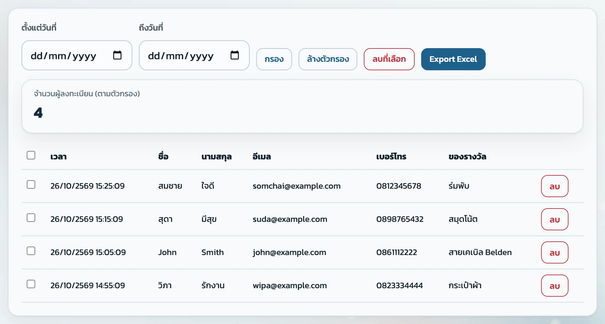
- กรองตามวันที่ — เลือกช่วงวัน แล้วกด กรอง (งานหลายวันใช้ดูยอดรายวันได้)
- Export Excel — ดาวน์โหลดรายชื่อตามตัวกรองที่ใช้อยู่
- ลบ / ลบที่เลือก — ลบรายชื่อ
11. ลบ Event
กด ลบ Event → ถ้ามีผู้ลงทะเบียนอยู่ ระบบจะถามให้ดาวน์โหลด Excel เก็บไว้ก่อน แล้วค่อยยืนยันการลบ
12. ปัญหาที่พบบ่อย
หน้าเกมขึ้น “ไม่พบงานนี้”
ลิงก์ไม่มี ?event=… หรือ slug ผิด / Event ถูกลบไปแล้ว → คัดลอกลิงก์ใหม่จาก Admin
หน้าเกมขึ้น “เชื่อมต่อไม่สำเร็จ”
อินเทอร์เน็ตที่บูธมีปัญหา → เช็คสัญญาณ แล้วกดปุ่มโหลดใหม่ในหน้านั้น
แก้ใน Admin แล้วหน้าเกมไม่เปลี่ยน
ลืมกด 💾 บันทึก หรือหน้าเกมยังเปิดค้างไว้ก่อนแก้ → บันทึกแล้วรีเฟรชหน้าเกม
เปิดเว็บแล้วยังเป็นหน้าตาเก่า
เบราว์เซอร์จำหน้าเดิมไว้ → บนคอมกด Cmd+Shift+R (Windows: Ctrl+F5) บน iPhone ปิดแท็บแล้วเปิดใหม่
บันทึกไม่ผ่าน “จำนวนต่ำกว่าที่แจกไปแล้ว”
จำนวนรวมต้องไม่น้อยกว่าที่แจกไปแล้ว — ถ้าจะลดของ ใช้ ปรับสต็อก → หักของ แทนการแก้ตัวเลขตรงๆ